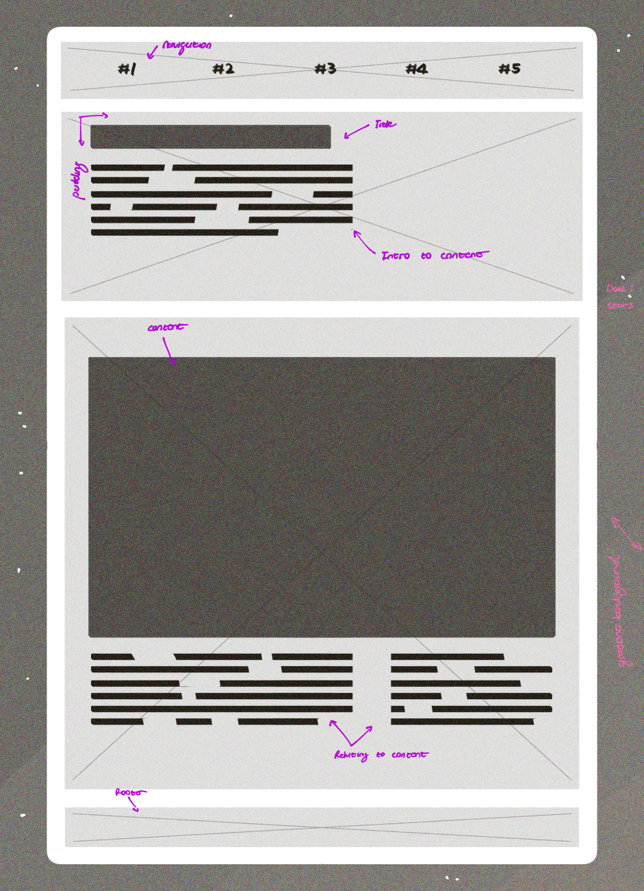

Fireballs and bolides
This will be a website talking about fireballs and bolides as per the data collected from NASA's Fireball Data API
A comet is a celestial object composed primarily of ice, dust, rock, and various organic compounds that orbits the Sun. When comets are far from the Sun, they exist as frozen, dormant objects. However, as they approach the Sun in their elliptical orbits, they begin to heat up, causing the ice within them to vaporize. This process releases gases and dust, forming a glowing coma, or cloud, around the comet's nucleus
The solar wind and radiation pressure from the Sun push some of this material away from the coma, forming the characteristic tail or tails that point away from the Sun. Comets typically have two types of tails: a dust tail, which is a yellowish or white trail of tiny solid particles, and an ion tail, which appears bluish and is made up of gases that have been ionized by the Sun's ultraviolet radiation.
Comets have been observed and studied for centuries, and they are believed to be remnants from the early formation of the solar system, containing important information about its history and composition. As they travel through the inner solar system, they can be visible from Earth and have fascinated people for generations.
Fireball Scatterplot
Overall, a comet's speed is primarily dictated by the balance between the gravitational force from the Sun and the comet's velocity as it traverses its orbit around the Sun. The speed of a comet can change throughout its journey as it gets closer to or moves away from the Sun.
Below is visual for a chart comparing the relationship between energy and velocity of the 20 fastest recorded so far (you may need to reload the page at this point to see the animation, if they did not play on scroll).
Though there is a common trend of stable or uniform comets for most of them, the two outliers are a particularly slow and tired comet near the y axis, and a very energentic one alone at the top. Strangley, whilst being by far the most energentic, it was not the fastest that's been recorded, though is among the top-10 nonetheless.
Art
This portion of the site will be dedicated for the data art section once that segment has been completed.
Blog Section
These are the various blog posts done during the semester—tasks focused on information synthesis and content reflection.
Overview of Data Visualisation
This was the first reflection piece completed, the article, "Overview of Data Visualization" by author Qi Li.
This is the first blog post for the second semester of interactive media and has us examine and perform a close reading of the chapter, Overview of Data Visualisation, the second in the text, Embodying Data: Chinese Aesthetics, Interactive Visualisation, and Gaming Technologies, by author Qi Li. The following will be a summary of this chapter of the reading as I understood it.
The text talks about the concept of data visualization, its origins, and where it was and is applied in ancient and modern societies. Going back as far as the 2nd Century, it has roots in the form olds drawings and manual recollections of information, through with the advent of computer processing and graphical software, technology has advanced the field data visualisation, allowing individuals to collect, analyse, and manipulate much larger volumes of information, and with much more accuracy (Li, 2020:16). Li outlines some key advantages of this practice, such as the ability to represent large volumes of date, indeniying emergent properties, understanding both alrge and small scale data, qaulity control, idenitifyign problems, and constructing sound hypothesies.
This often takes the form of visual, graphical imagery, helping to make sound decisions from the visual representations of which Li says the following in relation to that: “The success of data visualization is due to the soundness of the basic idea behind it: using computer-generated images to gain insight and knowledge from data and its inherent patterns and relationships” (Li, 2020:18).
Li cites several sources for what data visualization has been defined as for the time it has been studied, though I have chosen to condense it into the following: Data visualization is a process that involves transforming data into a visual or sonic form using computer technology. It involves the exchange of information between the sender, receiver, and message, utilizing visual perception abilities to amplify cognition. It is a key element in identifying patterns within a graphic through exploring and analyzing data. “understanding real number lines, time, measurement, and estimation, as well as ratio concepts like fractions, proportions, percentages, and probabilities," Li writes (Li, 2020:19). She further classes this into two types: information and scientific visualization, with the former representing abstract dates and the latter representing physical data. Both are done via an attempt at conveying graphical data into a visual form. Li goes at length describing traditional means of data visualization, though I will only outline them for the purposes of this text, starting with the earliest mode, trees.
Tree diagrams hierarchical structure provides a powerful tool for organizing, rationalizing, and illustrating information patterns. The visual metaphor of the tree is used to represent a network of nodes within its branches in data visualization. Some offshoots of this are treemap diagrams, the space-tree, and star-tree diagram, each of course being better suited for representing different data and information (Li, 2020:26).
Following that are simply maps. Maps are graphical depictions that highlight relationships between elements of space, such as objects or regions. The most conventional use is geographic maps, which are used to help people define, explain, and navigate through the world. For instance, road maps, aeronautical and nautical charts, railway or subway network maps, and hiking or bicycling maps Maps were designed and fixed on paper or durable materials. The invention of computer technology has allowed for the development of dynamic and interactive maps. interactive functions, such as zooming in and out (Li, 2020:29).
Next are the charts. Useful for representing data in line, bar, or slice forms, charts traditionally represent data in the form of a table, graph, or diagram. This form is useful in representing quantitative data that conveys information about sizes or dimensions, and more specifically, in representing correlation and regression in graphic form (Li, 2020:30).
Tables are another common form of visualization and do so by displaying data within various fields, allowing for efficient comparative data on categorical objects. Featuring rows and columns, they represent data in two dimensions, with quantitative data placed in the squares at the intersection of the row and column. Advantages of this include conveying precise numerical values, aiding viewers in making comparisons, and organizing information where graphing might not be appropriate. An offshoot of that are timetables, a type of table used for referring to and managing tools for scheduled events, tasks, actions, or appointments. They organize data into chronological or alphabetical order, allowing for quicker referencing. Timetables are basic ways to show arrival and departure times for transportation, making them ideal tools for individual time management (Li, 2020:32).
Next are diagrams, a useful tool for business-related analysis that illustrates information flow through rectangles and lines. Before computer technology, hand-drawn graphs were used, but handling large amounts of data like internet data flow was not so simple. Li, 2020:32). Graphs, similar to diagrams, help perceive and recognize broad features of data or information, providing insight into the data. (Li, 2020:35). Some less intuitive but nonetheless useful forms are waveforms, which represent the shape of time related to various quantities of data; simulations, which enable observers to understand and describe sometimes unique and exotic natural phenomena; and volume visualization, which creates a graphical representation of data sets on 3D grids. These are multidimensional arrays of scalar and vector data, typically shown on lattice structures representing values in 3D environments (Li, 2020:40).
Li concludes by once again reiterating the important practice and role that data visualization has in society and human and technological interaction, with various modes of data visualization aiding in creating readability, recognizability, and meaning for processed information.
Critical Reflection
The following will be a brief analysis and reflection on the proposed UI/UX for our most recent website submission. The subject matter will be integrating NASA’s API in our build, and so the theme by extension will be regarding space and the vast cosmos
For the style of the site, I attempted to tie some of the visual elements into the space theme and explore the space motif with the key visuals. The most obvious thematic element is the background of the site. It is an animated background, using a sort of cascading gradient made up of three dark colours along with small white dots in place of stars. The entire element serves as an allusion to the space motive—navigating the site as you would the cosmos. The reference for the background element is the generic scenery of stars when observing the night sky.
The rest of the page itself has the contents laid out vertically, similarly to a portrait, as opposed to a more conventional landscape. The two reasons behind this were personal preference and screen space; fitting the background element meant that content and the primary webpage couldn’t occupy the whole screen. Personally, I prefer portraits because hey are easier to read as they are more reminiscent of conventional A4 pages and are less visually straining to read and navigate across long texts and elements than short texts and more compact elements. This relates to a practice and idea we learned last semester called "reducing cognitive load," where reducing the amount of visual information the user has to process at a time leads to a less overwhelming experience overall. Having only some text and a primary graphic works better for this (UXpin, 2020). This also keeps the site fairly flexible, as it will be relatively simple to convert to mobile with the use of media queries since the site is already primarily vertically laid out
The overall layout and visual structure were centered around a vertical main page where users would scroll down as they engaged with the site and the content, as opposed to clicking away at links and navigation menus (UXpin, 2020). This was reflected in the lead wireframe for the site.
In hindsight, I saw the primary drawback to having the page setup this way: that it was difficult to go to and from specific sections of the page without having to do a bit of scrolling. Hiding the scrollbar compounds this problem, even though the site looks cleaner and less cluttered without it. I could remedy this by having the existing navbar be sticky, so that it attaches itself to the top of the screen no matter what section the user has scrolled to. If not a sticky navbar, then a simple “back to top” icon for added functionality This serves to add a “clear next step," as it were (UXpin, 2020). One other thing I may consider is creating a custom scrollbar with CSS as well as a custom cursor to better match the space motif. The only font present is Poppins sans-serif, a typeface by Jonny Pinhorn and a favorite of mine. Doing well in terms of readability and legibility, I went with a bolder or more weighted look for much of the text on the site for more clarity and visual appeal. Having generic black text on a black background is quite underwhelming, even with good fonts, so an alternative I would try is inverting that by having the text light and the page dark, though I would need to play around with that because the rest of the page and backgrounds are also dark, so having only the text be light may be jarring to look at. What having a white backdrop does help with is creating visual interest since the content of the large would not be as blank and sandwiched between it and the starry background. This would also not impact how the user would consume information.
Having all the content aligned vertically and symmetrically goes back to the theory of Victor Papanek, the late designer and educator, in his reading, Design for the Real World, and his insights about symmetry: “. . .we impose our intent and may produce some sort of symmetrical alignment. A symmetrical-order system is a favourite of small children, unusually primitive peoples, and some of the insane, because it is so easy to understand. Further shifting will produce an infinite number of asymmetrical arrangements that require a higher level of sophistication and greater participation on the part of the viewer to be understood and appreciated.” (Papanek, 2006)
It’s somewhat longwinded, but what I took from it is that visual hierarchy is important in design and when presenting information. As such, I aimed to reflect that in what information to have in any section at any given moment, and I will improve on that in the next iteration of the site in a week’s time.
Interaction for Data Visualisation
The reading for this task was the article, What is Interaction for Data Visualization?, by assistant professors Evanthia Dimara and Charles Perin, which talks about some of the ambiguity and confusion around the idea of interaction in data visualisation, and attempts to define the term to better serve users and practitioners of design and aid visualisation systems. I figured that before doing the reading, I would first consolidate the web to get some general ideas for a definition. While typically nonspecific, I have found that dictionary definitions give a more general and intuitive understanding of terminology than jumping straight into text on a blank slate. “An interaction technique, user interface technique or input technique is a combination of hardware and software elements that provides a way for computer users to accomplish a single task.” (Wikipedia, 2022)
“Data and information visualization presumes that "visual representations and interaction techniques take advantage of the human eye's broad bandwidth pathway into the mind to allow users to see, explore, and understand large amounts of information at once. Information visualization focused on the creation of approaches for conveying abstract information in intuitive ways.” (Wikipedia, 2023) “mutual or reciprocal action or influence” (Merriam-Webster, 2023) Most of these did not necessarily have to do with “interaction” as a topic in and of itself, but some of the components and mechanisms around it. This was actually mentioned in the text as I got to read it, where the authors made it a point to differentiate interaction through interactive techniques. Three instances of this are discussed here, including interaction, interaction technique, and interactivity (Dimara & Perin, 2020; 5). The first and most relevant has to do with the dialogue between users and the visualisation system—the user actions and system responses, so to speak. The techniques are the means (hardware and software) through which interaction can take place. What we are more broadly familiar with as students, many of which we covered in the previous blog post about data vis (Li, 2020), Lastly, there was interactivity more generally, encompassing the overall feel, properties, and quality of interactions, with an emphasis on the user's experience. Another aspect mentioned was the science or study of interactivity, which is still broader but beyond the scope of the article (Dimara & Perin, 2020; 5). Even still, it was good to see and learn about the different facets of interaction, and the authors attempted to make sense of them. Within this context however, it is interaction within the realm of data vis, and so this was the definition put forth by the authors:
“Interaction for visualization is the interplay between a person and a data interface involving a data-related intent, at least one action from the person and an interface reaction that is perceived as such.” (Dimara & Perin, 2020; 8) In their own words, this definition is “compact” (Dimara & Perin, 2020; 8), but is quite loaded in terms of content to unpack and is a pretty robust framework. The main points as I understood them were: interplay (which describes the interaction or exchange; may not always be linear or sequential), person (simply the agent; not necessarily always human), data interface (entity that the agent interacts with, forming the other half of the interaction), action (the physical or mental input by the agent), reaction (the interface’s response to said action), and lastly reaction perception (the tangible response ought to be perceived by the agent) (Dimara & Perin, 2020; 8–9). This causality or cause-and-effect relationship is what governs, and is the foundation for the whole interaction model. For some context on some of the terms in the definition, in particular the ideas of actions and entities, this is what I took from the beginning portion of the article. In the context of interaction through data visualisation, there are internal and external factors for both actions and entities. External entities are the user or agent and their motivations for initiating the interaction. Data is another, and of course, the agent’s main point of interest. The mediating entity is responsible for providing controls to access data. Time is another and has to do with temporal functions of cause-and-effect, as I mentioned above (Dimara & Perin, 2020; 3– 4). Internally, there is the goal-oriented aspect of the interaction, which has to do with user intent, which the authors note exists at both low and high levels of operation. (Dimara & Perin, 2020; 4). For actions, there is the dialogue or interplay between the user and the system; actions and inputs; reactions and outputs. Internally, these do not only include physical actions but also cognitive activities of the user, such as reasoning, analysing, and other cognitive acts related to the data (Dimara & Perin, 2020; 4). The authors laid out a concrete definition for interaction for data visualization, which has a lot to do with human intent, means of actions and interactions, and the resulting causality that I took a lot from as I worked through understanding it. Dimara & Perin, 2020, 10). They stated that it was their intent with the piece to propose a definition that unifies the visualisation community and aids in improving the quality of visual systems within their field. As an undergraduate student, I don’t personally relate too much to anything that ambitious, as my only goal is to learn, understand, and think about new ways of thinking. In the context of interaction and data visualisation, this article has helped a lot.
Design
This will cover some of the design thoughts and decisions for this boiler site and planning for the finished build.
Above is the master wireframe for the overall look and functionality of the site.
It features ample padding and wide margins for clarity, as well as room to showcase the background elements.
This is to lend into the space motif a bit, as the user feels like they are exploring the deep expanse while scrolling the site and having the background visuals as accents. This is also the reason I have decided to forgo separate pages and rather have them as sections the user scrolls to. The navbar will have some sticky functionality so as not to burden the user by having to manually scroll up in order to change sections.
The colours will be dark and have blue and purple hues in accordance with the space theme.
The font for the site will be Poppins sans-serif. It has some good readability and legibility, and because of the uniformity in the characters, it should not develop any strange or overlapping artefacts when italicised or bolded.
I would aim for the overall site to be simple and minimal, and I had decided to do away with complex graphics and animations so as not to overwhelm the user or lead to something jarring and instead have subtle background effects and allow the content to generate visual interest once it has been implemented.